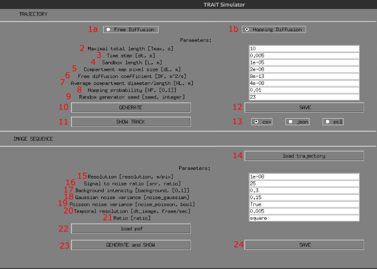

Simulator GUI¶
Starting the GUI¶
The GUI can be started from command line by entering trait2d_simulator_gui. The GUI and its components are described below.
Description of the GUI¶
Select the free diffusion model
Select the hopping difffusion model
Parameter: maximal total length (
Tmax) in seconds: This is the maximum simulation duration. The simulation might be short if the particle diffuses out of the simulation volume.Parameter: time step (
dt) in seconds: This is the temporal discretization of the simulation domain.Parameter: sandbox length (
L) in m: This is the physical size of the simulation domain.Parameter: compartment map pixel size (
dL) in m: This is the physical discretization of the simulation domain.Parameter: free diffusion coefficient (
Df) in m²/sParameter: average compartment diameter / length (
HP**) in m. This parameter is used by the hopping diffusion model.Parameter: Hopping probability (
HL), between 0 and 1: Describes the probability of hopping diffusion, e.g. the probability of changing hopping diffusion cells.Parameter: Random generator seeds (
seed, integer): This ia an optional integer used to initialize the random number generator. This is mostly used for reproducibility (initializing a simulation with a given seed will give the same simulation results every time). Keep empty to use a random seed.Run the diffusion simulation using the diffusion model selected in 1a/1b, and the diffusion parameters described by 2-9. Generate must be used every time the diffusion parameters are changed.
Visualize the simulated diffusion track. Must generate (10) beforehand.
Save the simulated track to a file. Uses the selected file format (13).
Exported track file format. Available formats are
.csv,.json, and.pcl.Load a track file (simulated track, detected track, …). If a track was simulated using a diffusion model, it can be used directly to generate the movie (if load trajectory is not used).
Parameter: resolution (
resolution) in m/pix: This is the movie physical resolution in m per pixel. If the track’s particle positions are expressed at a finer resolution, they will be rounded to the closest pixel position given by this parameter.Parameter: signal-to-noise-ration (SNR): Gives the ratio between the signal and the simulated noise. Higher SNR will result in higher particle contrast compared to the background.
Parameter: background intensity: Average background intensity of the simulated movie.
Parameter: Gaussian noise variance: Represents the background noise.
Parameter: Poisson noise variance: If
True, Poisson noise will be added to the simulated movie.Temporal resolution (frame/sec): This is the temporal resolution of the simulated movie. The track positions for all time frames in between the discrete times of the simulated movie are integrated.
Ratio: If set to square, the simulated movie will have the same height and width. Otherwise the movie dimension will be given by the particle’s track positions.
Load PSF: Optional. Used to load a point spread function stack. The Z-axis must be the first dimension of the stack. The middle frame along dimension 0 is used for the convolution.
Generate and show the simulated movie given the loaded track and the simulation parameters.
Save the simulated movie as an image stack.